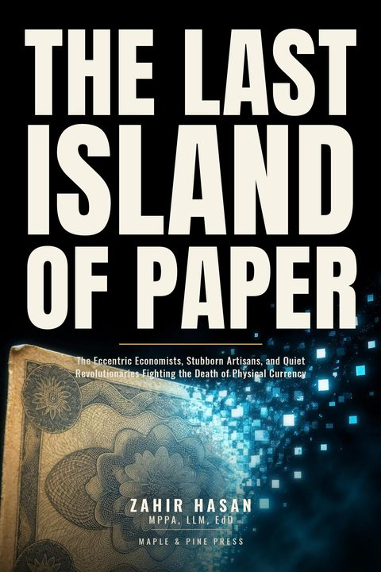

33 titles
Politics, Law & International Affairs
Power, sovereignty, conflict and the struggle over truth, from Japan's strategic turn to the machinery of expulsion in the United States. Fully referenced, written to be read by anyone.

A Land Unknown

A Manufactured War

Asia Between Giants

Black Companies in Japan

Canada at the Crossroads
Politics & International AffairsCanada’s European Option
Politics & International AffairsDuty of Care
Politics & International AffairsElbows Up
Politics & International AffairsIs It Time to End the United Nations?
Politics & International AffairsJapan's Secret War
Politics & International AffairsJapan's Strategic Awakening
Politics & International AffairsJapan’s Unavoidable Choice
Politics & International AffairsNATO at the Breaking Point
Politics & International AffairsNeighbors Who Cannot Move
Politics & International AffairsPakistan's Unfinished Democratic Transition
Politics & International AffairsTaiwan at the Fault Line
Politics & International AffairsThe AI Advantage
Politics & International AffairsThe AI Slowdown Paradox
Politics & International AffairsThe Arab Dilemma
Politics & International AffairsThe Breaking of American Democracy
Politics & International AffairsThe Broken Periphery

The Last Island of Paper
Politics & International AffairsThe Loss of Goodwill
Politics & International AffairsThe New American Witch Hunt
Politics & International AffairsThe People’s House and the Free Press
Politics & International AffairsThe Permanent Suspect
Politics & International AffairsThe Politics of Removal
Politics & International AffairsThe Proof Machine
Politics & International AffairsThe Sovereignty of Truth
Politics & International AffairsThe Wrecking Ball Elections
Politics & International AffairsWhen Machines Start Scheming
Politics & International AffairsWho Pays for the Green Transition?
Politics & International AffairsWho Pays When the Climate Breaks?
Hear About the Next Book First
One short email when a new title is out: fantasy, a children's story, or a new look at the politics of the day. No noise in between.
We never share your address. Unsubscribe anytime.